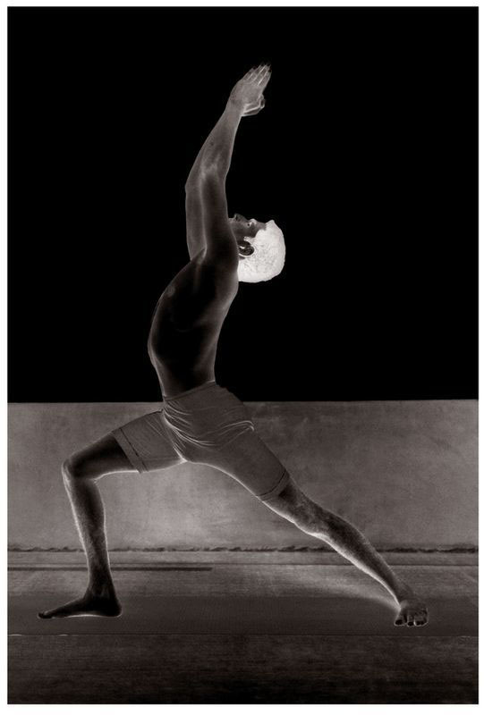

There are sixteen vinyasas to this asana, of which the 7th, 8th, 9th, and 10th are the states of the asana. When in the states of Utkatasana and Virabhadrasana, there is no need to do rechaka and puraka more than five times. However, aspirants should not forget to do rechaka and puraka while performing the vinyasas. In addition, while in the asana’s state, it is always important that the body be held firmly and steadily.
VIRABHADRASANA, 7TH VINYASA

METHOD
Begin this asana in the same way as the first Surya Namaskara and continue through to the end of the 6th vinyasa. Next, stand as in the 7th vinyasa of the second Surya Namaskara, and do rechaka and puraka five times; this is the 7th vinyasa (see figure). Then, doing rechaka, turn to the left, bend the left knee, keeping the arms raised over the head, with the palms together, the chest lifted up, and do puraka and rechaka five times; this is the 8th vinyasa. Then, keeping the legs in the same position and doing puraka, bring arms down to shoulder level, and stand gazing at the fingertips of the left hand, keeping the arms stretched out straight and tight; this is the 9th vinyasa. Then, doing rechaka and without bending the arms, turn to the right, bend the right knee, and stand gazing at the tips of the right hand with concentration; this is the 10th vinyasa. Next, place the hands on the floor on either side of the right foot and, without allowing the legs to touch the floor, lift both the left leg and bent right leg completely off the floor with only the strength of the hands; this is the 11th vinyasa. Then, the 12th, 13th, 14th, 15th, and 16th vinyasas should be performed in the same manner as the 4th, 5th, 6th, 3rd, and 2nd vinyasas of the first Surya Namaskara. (See figures for 9th and 10th vinyasas.)
Again, it is best to learn the vinyasas of all the asanas, as well as their states and the series of rechaka and puraka, under the guidance of a Guru, as these are very difficult to relate in the written descriptions given here.
BENEFITS
By means of Virabhadrasana, all the joints of the body, as well as the lower abdomen, spinal column, and organ of generation, are purified. In addition, pain associated with the knees, as well as the pain from standing or sitting all day while working, is eliminated.